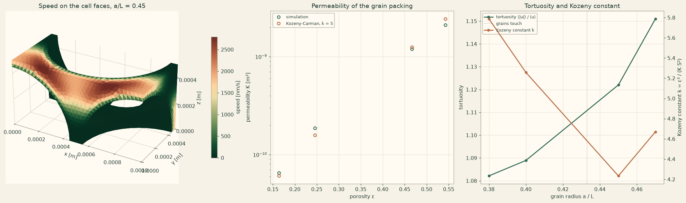
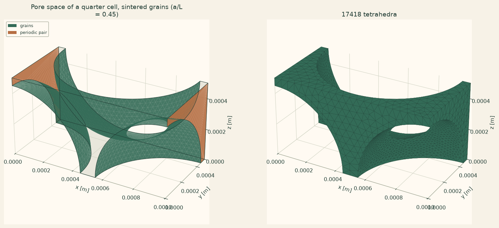

Docs › Examples › Porous structure on the microscopic scale: a sintered grain packing
Porous media · 3D
Porous structure on the microscopic scale: a sintered grain packing
Porosity, specific surface, tortuosity and permeability of a body-centred grain packing, with separate and with sintered grains, from the resolved 3D pore flow in one periodic cell.
Run locally with OneSimulation. The example downloads are free. Running them requires an activated runtime. OneSimulation 1.0 · CPython 3.13 on macOS (Apple Silicon), Ubuntu 22.04 (x86-64), and Windows x64. Installation and activation · View pilot plans. Scope of the reference checks.


What it computes
OneSimulation reads a quarter of the periodic unit cell, the pore space left between corner and centre grains, from STEP files for four grain sizes, meshes it with tetrahedra whose periodic faces match and solves the 3D creeping flow with Taylor-Hood elements, driven by a uniform pressure gradient between mirror planes; the homogenized numbers for a Darcy or Brinkman model follow by integration. The script that builds the STEP files comes with the notebook.
What it checks
At a/L = 0.45 the finest grid grows from 2,386 to 4,887 nodes and from 8,097 to 17,418 tetrahedra. The last two meshes give a 0.42% change in permeability, with K = 1.846e-10 m² on the finest grid. Across all four packings, permeability is 0.86–1.19 times the Kozeny-Carman estimate, and the largest absolute difference between mesh and CAD porosity is 0.0006.
Geometry
Save the STEP files porous_microstructure_hexagonal_array.step, porous_microstructure_hexagonal_array_38.step, porous_microstructure_hexagonal_array_40.step, porous_microstructure_hexagonal_array_45.step, porous_microstructure_hexagonal_array_47.step next to the notebook before running it.


The geometry script
The script porous_microstructure_hexagonal_array_geometry.py builds the geometry with the CAD objects of OneSimulation and writes the files. Change a dimension there, run it, and run the notebook again.
"""Geometry of the OneSimulation example "Porous structure on the microscopic scale: a sintered grain packing".
Builds a quarter of the periodic unit cell of a body-centred cubic packing of spherical grains with
the CAD objects of OneSimulation. The cell has the side 1 mm; grains sit on its corners and in its
centre. The quarter holds 1 mm x 0.5 mm x 0.5 mm (x along the flow, y and z between mirror planes)
with the grains at (0, 0, 0), (1, 0, 0) and (0.5, 0.5, 0.5) mm cut out. Above a grain radius of
0.433 mm the centre grain overlaps the corner grains, as in a sintered material, and the pore space
is no longer a sum of simple shapes. One file per grain radius in per cent of the cell side:
porous_microstructure_hexagonal_array_<percent>.step for 38, 40, 45 and 47 per cent and
porous_microstructure_hexagonal_array.step for 45 per cent. The cell faces keep the names x_min,
x_max, y_min, y_max, z_min and z_max; the grain surfaces form the group grains.
"""
from onesim.cad.d3 import Box, Sphere
side = 1e-3
for percent in (38, 40, 45, 47):
radius = percent / 100 * side
grains = (Sphere(radius=radius) | Sphere(radius=radius, origin=(side, 0.0, 0.0))
| Sphere(radius=radius, origin=(side / 2, side / 2, side / 2)))
quarter = Box(length=side, width=side / 2, height=side / 2) - grains
quarter = quarter.grouped(grains=quarter.select(faces=lambda face: face.kind == "sphere"))
quarter.save(f"porous_microstructure_hexagonal_array_{percent}.step")
if percent == 45:
quarter.save("porous_microstructure_hexagonal_array.step")The notebook
The complete notebook, cell by cell. Run it to produce the figures and the comparison printout.
A macroscopic model of a porous material - Darcy's law or the Brinkman equations - needs a handful of numbers that summarize its microstructure: the porosity \(\varepsilon\), the specific surface \(S\) (pore wall area per volume), the tortuosity \(\tau\) of the flow paths and the permeability \(K\). All of them follow from a resolved model of one representative volume of the pores. Here the volume is the unit cell, of side \(L=1\) mm, of a body-centred cubic packing of spherical grains of radius \(a\). Above \(a=\sqrt3L/4=0.433\) mm the centre grain merges with the corner grains through necks, as in a sintered metal or ceramic filter, and the pore space becomes a network of channels without a simple shape.
A uniform pressure gradient \(G\) along \(x\), applied as a body force, drives the creeping flow through the pores; then \(K=\mu\langle u\rangle/G\) with the superficial velocity \(\langle u\rangle\), and the tortuosity is \(\tau=\langle|\mathbf u|\rangle/\langle u\rangle\):
The planes through the grain centres and between them are mirror planes of the packing, so a quarter of the cell, 1 mm long in the flow direction and 0.5 mm by 0.5 mm across, is enough. It comes from the CAD files porous_microstructure_hexagonal_array_<a/L in %>.step for \(a/L=0.38\), 0.40, 0.45 and 0.47, written by porous_microstructure_hexagonal_array_geometry.py with the CAD objects of OneSimulation.
| face | condition |
|---|---|
x_min / x_max | periodic pair |
y_min, y_max, z_min, z_max (mirror planes) | impermeable, shear free |
grains | no slip |
Reference. The Kozeny-Carman relation of packed beds (P. C. Carman, Trans. Inst. Chem. Eng. 15, 150-166 (1937); J. Bear, Dynamics of Fluids in Porous Media, Elsevier 1972, Sec. 5.10)
with \(S\) the grain surface per bulk volume. Carman's constant \(k=5\) is an empirical average over beds of irregular grains; for a regular packing the computed Kozeny constant \(k=\varepsilon^3/(KS^2)\) shows how far the structure departs from it.
import numpy as np
from onesim.cad.exchange import load
from onesim.materials import NewtonianFluid
from onesim.meshing import LocalRefinement, PeriodicPair, TetrahedralMesher
from onesim.numerics import Numerics
from onesim.numerics.fem import FiniteElement, TaylorHood
from onesim.numerics.linear import SparseDirect
from onesim.numerics.nonlinear import Newton
from onesim.physics.hydrodynamics import (FreeSlipLaw,
IncompressibleNavierStokes,
NoSlipWall, WallShear)
from onesim.results.comparisons import convergence
from onesim.results.derived import derived_field
from onesim.simulation import PeriodicBoundary, Problem, Simulation
from onesim.simulation.field_constraints import MeanValue
from onesim.visualization import plots, theme
theme.set()Geometry and mesh
The fine mesh uses 0.045 mm in the pores and 0.016 mm on the grains. The two periodic faces carry the same triangles. The mesh study at \(a/L=0.45\) adds 0.032 mm and 0.022 mm on the grains. The specific surface is the area of the grain faces of the CAD part over the volume of the quarter.
ratios = (0.38, 0.40, 0.45, 0.47)
cells = {ratio: load(f"porous_microstructure_hexagonal_array_{round(100 * ratio)}.step") for ratio in ratios}
side = cells[0.45].size[0]
volume = side**3 / 4
grain_sizes = (0.032e-3, 0.022e-3, 0.016e-3)
cases = [(ratio, grain_sizes[-1]) for ratio in ratios] + [(0.45, size) for size in grain_sizes[:-1]]
meshes = {(ratio, size): TetrahedralMesher(target_size=0.045e-3, refinements=(LocalRefinement(region=cells[ratio].boundaries.grains, target_size=size),),
periodic_pairs=(PeriodicPair(first=cells[ratio].boundaries.x_min, second=cells[ratio].boundaries.x_max),))
.generate(cells[ratio]) for ratio, size in cases}
for (ratio, size), mesh in meshes.items():
print(f"a/L={ratio:.2f}, grain spacing {size*1e3:.3f} mm: {len(mesh.coordinates):,} nodes, {mesh.cell_count:,} tetrahedra")
surface = {ratio: sum(face.area for face in cell.faces if face.id in cell.boundaries.grains.members) / volume for ratio, cell in cells.items()}
cell = load("porous_microstructure_hexagonal_array.step")
view = plots.Camera(elevation=28, azimuth=-60)
fig = plots.figure(1, 2, size=(14, 6))
plots.geometry(cell, selection={"grains": cell.boundaries.grains, "periodic pair": cell.boundaries.x_min | cell.boundaries.x_max},
labels=False, camera=view, title="Pore space of a quarter cell, sintered grains (a/L = 0.45)", ax=fig[0])
plots.mesh(meshes[0.45, grain_sizes[-1]], groups=("all",), legend=False, camera=view,
title=f"{meshes[0.45, grain_sizes[-1]].cell_count} tetrahedra", ax=fig[1])
plots.show()Model
Water and a pressure gradient of 1 Pa/m keep the Reynolds number far below one. The pressure, periodic and fixed only up to a constant, gets the mean value zero.
water, gradient = NewtonianFluid(density=1000.0, dynamic_viscosity=1.0e-3), 1.0
models = {ratio: IncompressibleNavierStokes(domain=cells[ratio].volume, material=water, body_force=(gradient, 0.0, 0.0)) for ratio in ratios}
problems = {ratio: Problem(name="Grain packing unit cell", geometry=cells[ratio], physics=(model,), boundary_conditions=(
NoSlipWall(boundary=cells[ratio].boundaries.grains, physics=model),
WallShear(boundary=cells[ratio].boundaries.y_min | cells[ratio].boundaries.y_max | cells[ratio].boundaries.z_min | cells[ratio].boundaries.z_max,
physics=model, law=FreeSlipLaw()),
PeriodicBoundary(pair=PeriodicPair(first=cells[ratio].boundaries.x_min, second=cells[ratio].boundaries.x_max), physics=model)),
constraints=(MeanValue(model.pressure, 0.0),)) for ratio, model in models.items()}
flows = {(ratio, size): Simulation(problem=problems[ratio], mesh=meshes[ratio, size], numerics=Numerics(
spatial=FiniteElement(element=TaylorHood()), initial_guess={models[ratio].velocity: (0.0, 0.0, 0.0)},
nonlinear_solver=Newton(linear_solver=SparseDirect(), absolute_tolerance=1e-20, relative_tolerance=1e-10))).solve_stationary()
.field(models[ratio].velocity) for ratio, size in cases}Results
The porosity of the mesh against the fluid volume of the CAD part, the specific surface, the permeability, the tortuosity and the Kozeny constant for the four grain sizes, the Kozeny-Carman permeability with Carman's \(k=5\), and the mesh study of the permeability.
main = grain_sizes[-1]
porosity = {ratio: derived_field(flows[ratio, main], lambda u, points: np.ones(len(points)), name="one", unit="1").integrate().value / volume
for ratio in ratios}
permeability = {key: water.dynamic_viscosity * velocity.integrate().value[0] / volume / gradient for key, velocity in flows.items()}
tortuosity = {ratio: derived_field(flows[ratio, main], lambda u, points: np.linalg.norm(u, axis=1), name="speed", unit="m/s").integrate().value
/ flows[ratio, main].integrate().value[0] for ratio in ratios}
kozeny = {ratio: porosity[ratio] ** 3 / (permeability[ratio, main] * surface[ratio] ** 2) for ratio in ratios}
carman = {ratio: porosity[ratio] ** 3 / (5 * surface[ratio] ** 2) for ratio in ratios}
study = convergence([permeability[0.45, size] for size in grain_sizes], list(grain_sizes))
print(" a/L grains porosity CAD S [1/mm] K [m²] Kozeny-Carman K / K_KC tortuosity Kozeny k")
for ratio in ratios:
print(f"{ratio:4.2f} {'sintered' if ratio > np.sqrt(3) / 4 else 'separate':9s} {porosity[ratio]:9.4f} {cells[ratio].measure / volume:8.4f}"
f" {surface[ratio] / 1e3:9.3f} {permeability[ratio, main]:12.4e} {carman[ratio]:14.4e} {permeability[ratio, main] / carman[ratio]:9.3f}"
f" {tortuosity[ratio]:11.3f} {kozeny[ratio]:10.2f}")
print("\nmesh study at a/L = 0.45: K = " + ", ".join(f"{permeability[0.45, size]:.5e} m² ({meshes[0.45, size].cell_count} tetrahedra)"
for size in grain_sizes))
print(f"change between the two finest meshes {100 * study.change:.2f} %, extrapolated {study.extrapolated:.5e} m²")Figure
The flow speed on the faces of the quarter cell with sintered grains, the permeability against the Kozeny-Carman relation over the porosity, and tortuosity and Kozeny constant over the grain size.
fig = plots.figure(1, 3, size=(19, 5.5))
plots.surface(flows[0.45, main], component=lambda u, position: 1e9 * np.linalg.norm(u, axis=1), limits="robust", contours=6, subdivisions=2,
camera=view, label="speed [nm/s]", title="Speed on the cell faces, a/L = 0.45", ax=fig[0])
plots.line(points={"simulation": ([porosity[r] for r in ratios], [permeability[r, main] for r in ratios]),
"Kozeny-Carman, k = 5": ([porosity[r] for r in ratios], [carman[r] for r in ratios])},
markers=True, scale="logy", xlabel="porosity ε", ylabel="permeability K [m²]", title="Permeability of the grain packing",
legend="upper left", ax=fig[1])
plots.line(list(ratios), {"tortuosity ⟨|u|⟩ / ⟨u⟩": [tortuosity[r] for r in ratios]}, right={"Kozeny constant k": [kozeny[r] for r in ratios]},
vlines={"grains touch": np.sqrt(3) / 4}, right_label="Kozeny constant k = ε³ / (K S²)", markers=True, xlabel="grain radius a / L",
ylabel="tortuosity", title="Tortuosity and Kozeny constant", legend="upper left", ax=fig[2])
plots.show()Going further
Drive the flow along \(y\) in a second run to confirm that the cubic packing is isotropic, or move the centre grain off the body centre in porous_microstructure_hexagonal_array_geometry.py to make the medium anisotropic. A packing read from a scan of a real material replaces the regular cell without changing the model.